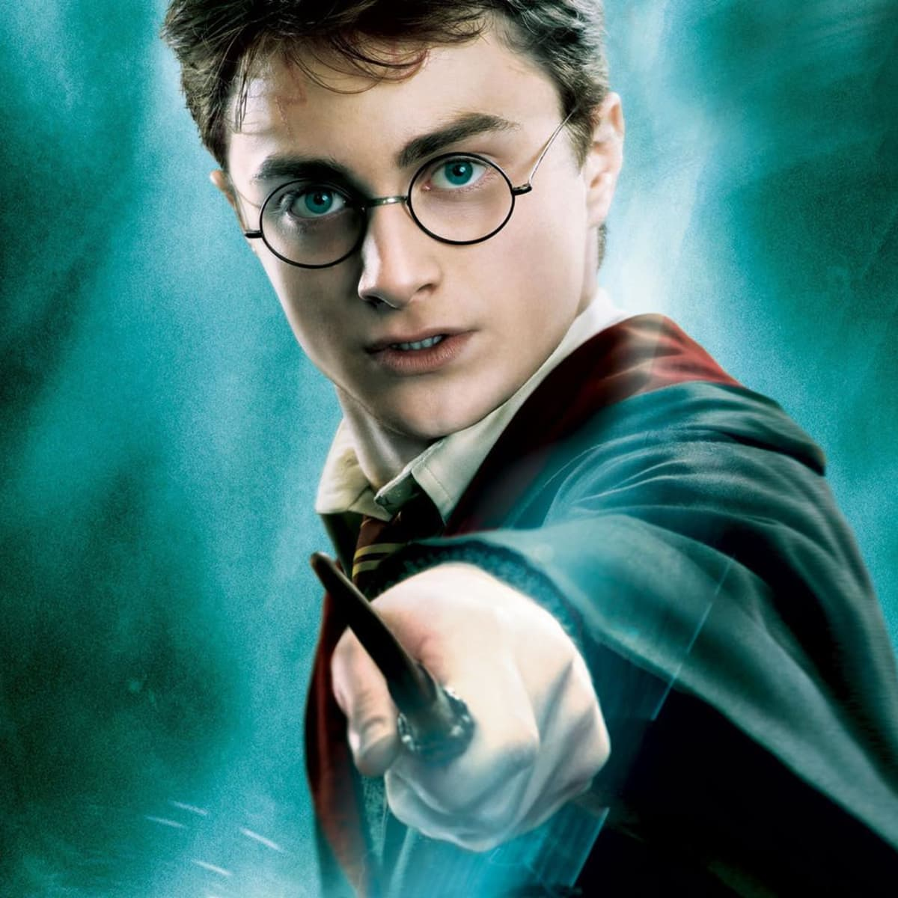

INTRODUCTION
HARRY POTTER HAS BECOME A CULTURAL ICON SINCE HIS DEBUT IN THE NOVEL "HARRY POTTER AND THE PHILOSOPHER'S STONE" IN 1997. THIS ENCHANTING CHARACTER HAS CAPTIVATED THE HEARTS OF MILLIONS WORLDWIDE, TRANSCENDING AGE BOUNDARIES AND LEAVING AN INDELIBLE MARK ON THE LITERARY AND CINEMATIC LANDSCAPES.
BACKGROUND
HARRY JAMES POTTER WAS BORN TO LILY AND JAMES POTTER, BOTH SKILLED WIZARDS, ON JULY 31, 1980. TRAGICALLY ORPHANED AT A YOUNG AGE WHEN THE DARK WIZARD LORD VOLDEMORT MURDERED HIS PARENTS, HARRY WAS LEFT WITH A LIGHTNING-SHAPED SCAR ON HIS FOREHEAD, A MYSTERIOUS SYMBOL OF THE EVENT. HE WAS SUBSEQUENTLY RAISED BY HIS UNKIND RELATIVES, THE DURSLEYS, UNTIL HE DISCOVERED HIS TRUE IDENTITY AS A WIZARD ON HIS ELEVENTH BIRTHDAY.
THE WIZARDING WORLD
UPON ENTERING THE MAGICAL WORLD, HARRY DISCOVERED HIS FAME WITHIN THE WIZARDING COMMUNITY AS "THE BOY WHO LIVED." HE ATTENDED HOGWARTS SCHOOL OF WITCHCRAFT AND WIZARDRY, WHERE HE FORMED ENDURING FRIENDSHIPS WITH RON WEASLEY AND HERMIONE GRANGER. THE TRIO NAVIGATED THE PERILS OF MAGICAL EDUCATION, UNCOVERING DARK SECRETS, AND FACING FORMIDABLE ADVERSARIES THROUGHOUT THEIR TIME AT HOGWARTS.
CHOSEN ONE
HARRY'S SIGNIFICANCE IN THE WIZARDING WORLD WAS AMPLIFIED BY A PROPHECY PREDICTING HIS EVENTUAL CONFRONTATION WITH LORD VOLDEMORT. KNOWN AS THE CHOSEN ONE, HARRY'S DESTINY INTERTWINED WITH THE DARK LORD'S, SETTING THE STAGE FOR A CLIMACTIC BATTLE BETWEEN GOOD AND EVIL.
CHARACTER DEVELOPMENT
WHAT MAKES HARRY POTTER A COMPELLING CHARACTER IS HIS EVOLUTION FROM A NAIVE, UNCERTAIN YOUNG WIZARD TO A COURAGEOUS AND SELFLESS HERO. AS HE FACED CHALLENGES, LOSS, AND MORAL DILEMMAS, HARRY'S CHARACTER MATURED, EMPHASIZING THEMES OF FRIENDSHIP, LOVE, AND THE POWER OF CHOICE.
MAGICAL ABILITIES
HARRY WAS KNOWN FOR HIS PROFICIENCY IN VARIOUS MAGICAL DISCIPLINES, EXCELLING IN DEFENSE AGAINST THE DARK ARTS, QUIDDITCH, AND MASTERING SPELLS LIKE THE PATRONUS CHARM. HIS ABILITY TO SPEAK PARSELTONGUE (SNAKE LANGUAGE) AND POSSESS THE INVISIBILITY CLOAK FURTHER ADDED TO HIS MYSTIQUE.
LEGACY
BEYOND THE SEVEN-BOOK SERIES AND FILM ADAPTATIONS, HARRY POTTER'S LEGACY ENDURES THROUGH THEME PARK ATTRACTIONS, SPIN-OFF BOOKS, AND A DEDICATED FAN BASE. THE CHARACTER'S IMPACT EXTENDS BEYOND FICTION, INSPIRING DISCUSSIONS ON MORALITY, IDENTITY, AND THE ENDURING APPEAL OF THE HERO'S JOURNEY.
CONCLUSION
HARRY POTTER'S JOURNEY IS A TESTAMENT TO THE POWER OF STORYTELLING TO CAPTIVATE IMAGINATIONS AND UNITE PEOPLE THROUGH A SHARED LOVE FOR MAGIC, FRIENDSHIP, AND THE ETERNAL STRUGGLE BETWEEN GOOD AND EVIL. AS THE BOY WHO LIVED, HARRY REMAINS A SYMBOL OF HOPE, RESILIENCE, AND THE ENDURING MAGIC OF LITERATURE.